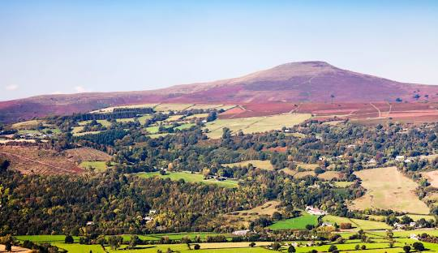
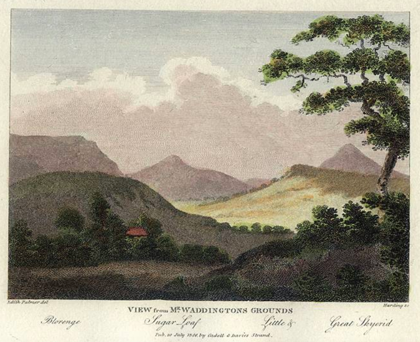
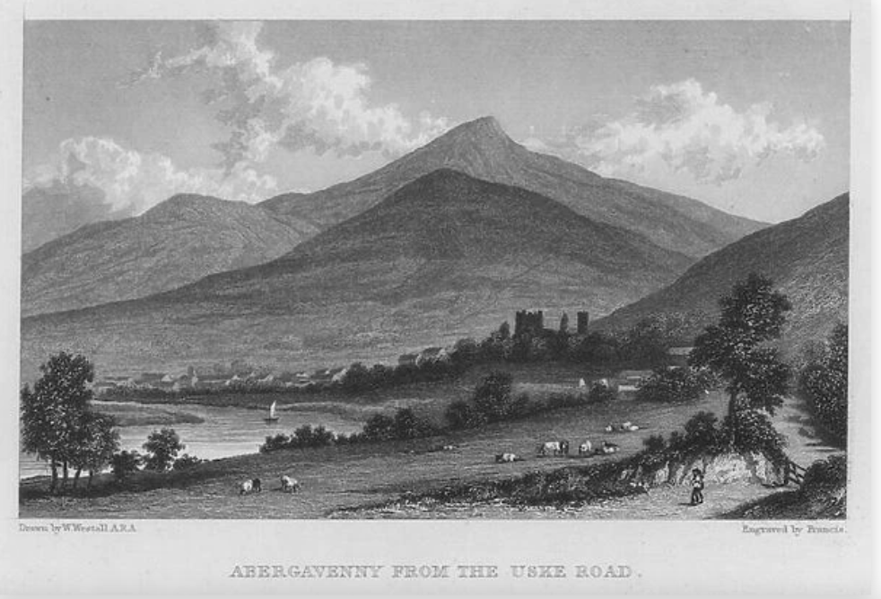
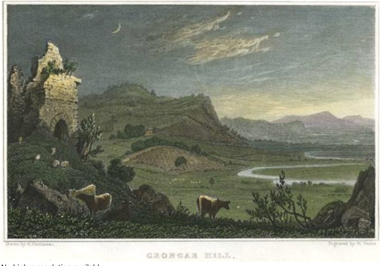

John Goodridge, ‘That deathless wish of climbing higher’: Robert Bloomfield on the Sugar Loaf
See [1] this layered sandstone in the short mountain grass. Place your right hand on it, palm downwards. See where the summer sun rises and where it stands at noon. Direct your index finger midway between them. Spread your fingers, not widely. You now hold this place in your hand.
(Raymond Williams, People of the Black Mountains)
I will clamber through the clouds and exist.
(John Keats, Letter to B. R. Haydon) [2]

On 21 August 1807 the poet Robert Bloomfield set off from the Angel Inn in Abergavenny with a touring party to ascend the Sugar Loaf Mountain. [3]
A ‘common open cart’ had been ‘fitted up with occasional seats for the purpose’ and was ‘abundantly stored with provisions, wine, bottled ale, and fruit, and every thing that could render the expedition agreeable and joyous’. The company of ten picturesque tourists plus three servants ‘excited a great deal of mirth’ among the local populace as they made their way towards the mountain. Their driver was a local man, a ‘red-faced little fellow named Powel’, who led them up the mountain in his cart, ‘drawn by three little scrambling ponies’. They followed the bed of a winter stream, and Bloomfield himself made the final ascent on foot, while one of a young men in the company, Parnell Cooper, ‘rode his father’s horse, amidst the rocks and fragments, almost to the summit, where the poor animal trembled and neighed for his companions’. Bloomfield’s prose journal of the tour (which I have been quoting), his contemporary and later letters, and his extended poem, The Banks of Wye (1811), all make it clear that he regarded this ascent of the Sugar Loaf as one of the greatest moments of his life. [4]
He accordingly took great care to record his experiences and in collaboration with others who were touring with him, prepared sketches and ink drawings of the tour, which he hoped to publish alongside the prose journal and the poem, to make what he called a ‘triple Journal’ of the tour. [5]
In the event, only the poem was published, four years later. The Banks of Wye, Bloomfield’s fifth volume, was a loco-descriptive poem of some 1,600 lines, divided into four books, describing the ten-day tour the party had made of the Wye valley and part of mid-Wales, interspersed with historical materials, songs, and an energetic searching for the picturesque, not always in its usual guises. It was worked up partly from the journal Bloomfield kept, itself posthumously published in abridged form among his Remains (1823). The poem was accompanied by just four prints, one for each book of the poem, ‘for my booksellers are averse to the costly and fashionable style of publishing.’ [6]
A plan to include music for the four songs in the poem foundered when the composer Davy asked a costly and fashionable thirty-five guineas to set them. [7]
Although the poem sold well enough for a corrected second edition to be called for in 1813, it has never until recently inspired much critical enthusiasm, having been regarded by literary historians as a minor and implicitly conventional contribution to the picturesque tradition, or else simply ignored. As noted elsewhere, what seems to have been required of labouring-class poets like Robert Bloomfield was what I have called a ‘narrative of failure’, a trajectory of rapid success followed by descent, disintegration and burn-out. [8]
By this model, the poem would mark the moment when Bloomfield, steering ever further away from his amazingly successful debut with The Farmer’s Boy (1800), finally ran out of steam. 9
But just as John Lucas has passionately argued for a fresh approach to Bloomfield’s final collection, May-Day with the Muses (1822), as a forgotten but essential link in the chain of nineteenth century social narrative poetry, [10] so Tim Burke has persuasively challenged the earlier consensus that The Banks of Wye is merely conventional and so uninteresting. In a paper given to the Bloomfield bicentenary seminar at the University of York in 2000, later published in a book of essays on Bloomfield, Burke counter-argued that the poem has a considerable depth of interest, especially in its engagements with English and Welsh history and culture, and in its surprising defiance of picturesque expectations. At the same time Simon White, writing the first full-length scholarly study of the poet, has also written about this poem in a more engaged and positive way, finding in its explorations and concerns a sort of literary equivalent to the radical historical idea of ‘history from below’. [11] Rather than tamely following the perspectives of picturesque tourists and theorists like William Gilpin, Bloomfield’s borderland tour in the company of a group of his English admirers repeatedly disrupts the conventions of the picturesque, engaging on a human as well as an aesthetic level with the labourers and servants the party comes into contact with, as the tourists are propelled down the river Wye then onward by coach into mid-Wales. Whereas Gilpin had notoriously desired the exclusion from his picturesque view of all traces of modern industrial and proletarian reality, Bloomfield pointedly invites into his poem such figures as a group of working reapers, a boatman and the Welsh cartman we have already met. [12]
White’s and Burke’s essays together provide useful guides to the poem, and should be read carefully by anyone interested in it. In this essay I shall extend rather than interrogate, in particular, Burke’s conclusions, by highlighting a particular moment in the tour and in the poem that may cast valuable light on its overall dynamics: the ascent of the Sugar Loaf. I want to try and answer two questions the episode raises for me, namely: Why did the ascent of this fairly modest mountain mean so much to Bloomfield? And why, in the poem, does reaching the summit of a Welsh mountain call for an ‘invocation’ to the spirit of Robert Burns – a lowland Scottish poet?
I. Peace and Health

The Sugar Loaf passage occurs in, and dominates Book III of the poem, which begins with a formal invocation. Having left the Wye with his party and turned to venture further into Wales, the poet invites the personified figures of Peace and Health to make the Monmouthshire mountains their own, and asks the great ‘spirits of her bards of yore’ now to train ‘her young shepherds’ to ‘sing of mountain liberty’. The latter phrase echoes Milton’s ‘The Mountain Nymph, sweet Liberty’, and would be used in turn by Bloomfield’s early admirer, the poet John Clare, to describe the Scottish drovers who passed through his landscape, ‘with honest faces fresh and free / that breath[e] of mountain liberty’. [13] Bloomfield’s invocation is immediately followed by a reminder of unpeaceable times, as the party visits the grand, picturesque ruin of Raglan castle on their way up the broad Usk valley towards Abergavenny. ‘This castle’, Bloomfield’s footnote informs us, ‘with a garrison commanded by the Marquis of Worcester, was the last place of strength which held out for the unfortunate Charles the First’. Bloomfield’s interest in Civil War and Welsh Border history links his poem to eighteenth-century georgic poems such as John Dyer’s The Fleece (1757), and perhaps more particularly, to John Philips’s Royalist georgic, Cyder (1705).
Their ‘rested steeds’ carry the party on to Abergavenny, and as dusk draws in the poet notes the ‘sidelong, sober light’ and ‘valleys darken’d’ as the sun sets behind the long ridge to their left, leading north-west towards the mountain of the Blorenge. Bloomfield also notes ‘Great Blorenge’ itself and ‘the dun peak of PEN-Y-VALE,’ (the Sugar Loaf). [14] In his journal for the next morning Bloomfield admits that the mountain he had seen the previous night from his bedroom window in the Angel Inn and taken to be his ‘Sentinel’ peak is in fact ‘not the Sugar-loaf, but one of much inferior size’. [15] Despite this minor misunderstanding, the party will successfully find the real mountain and make their ascent.
The invocation to the figures of Peace and Health may be more than merely conventional. As for Peace, Iain Rowley’s Bloomfield ‘Timeline’ reminds us that the Wye tour took place during the Napoleonic Wars, in the period between the Battle of Trafalgar (1805) and the onset of the Peninsular War (1808). [16] It was wartime, and whilst Bloomfield’s public persona may have been that of the apolitical farmer’s boy ‘Giles’, the central figure in his best-known poem, his private correspondence tells another story, being full of social comment and thoughtful engagement with current affairs. Bloomfield’s sensitivity to the wars that raged in this period may be seen in his decision to add a last-minute poem on ‘Peace’ to his second collection, Rural Tales, to celebrate the signing, in London on 1 October (8 Vendémiaire) 1801, of the peace talk preliminaries between Britain and revolutionary France. [17] He would have been highly aware of the continuing war, indeed the tour may have been a kind of escape from it, or in the case of the ascent of Sugar Loaf, a literal rising above it.
The other personification, Health, was a personal as well as a poetical issue. Ronald Blythe aptly termed Bloomfield the ‘poet of rural sickness’, both for his didactic poem on smallpox vaccination, and for a general alertness of his poetry to illness in rural culture. As Blythe writes, ‘He catches in his verse the tell-tale cough, the crippled walk, the flight of strength.’ [18] Bloomfield himself suffered poor health, in fact recovery from sickness was the stated reason for his being on this tour at all, as he says in his Preface:
In the summer of 1807, a party of my good friends in Gloucestershire, proposed to themselves a short excursion down the Wye, and through part of South Wales.
While this plan was in agitation, the lines which I had composed on ‘Shooter’s Hill,’ during ill health, and inserted in my last volume, obtained their particular attention. A spirit of prediction, as well as sorrow, is there indulged; and it was now in the power of this happy party to falsify such predictions, and to render a pleasure to the writer of no common kind. An invitation to accompany them was the consequence; and the following Journal is the result of that invitation. [19]
‘Shooter’s Hill’ is a poem in search of health – in style rather similar to John Dyer’s popular ‘Grongar Hill’ (1726) – on the pleasures of leaving London to seek the fresh air of Surrey around Box Hill. But as Erin Lafford notes in her discussion of it, ‘even in poems that seem firmly planted in a pastoral vision of rural healthiness versus the sickness of the city, Bloomfield’s sensitivity to health as essentially precarious comes through’. [20] ‘Shooter’s Hill’ foreshadows The Banks of Wye in that Bloomfield ‘adopts a mobile speaker, whose movement through the landscape allows them to record its features and sing its praises’, as Lafford puts it. The issue that concerns his new friends, though, and makes them determined to draw him out of his gloom and ill-health by taking him to ‘Cambrian mountains’ of which (as he says in the poem) ‘still I dream’, is his belief that he is facing an extreme choice between health and illness, and even between life and death. He spells this out towards the end of the poem, when he tell himself to:
Live, if thou’lt urge my climbing feet,
Give strength of nerve and vigorous breath,
If not, with dauntless soul I meet
The deep solemnity of death. [21]
Bloomfield’s mental and physical health problems were far from being new. In an 1801 letter to his brother George he had complained of faintness and debilitation, as he often did in his letters, lamenting what he saw as his family’s feeble constitution:
My head swims a little. I must take a turn amongst the brickfields and snuff up the smoke; and, perhaps tomorrow shall feel the return of my usual spirits, or more. O Lord! what a poor creature is Man! and of Men what a poor creature is a Bloomfield!! [22]
In his deeply felt tributary poem on the invention of the smallpox vaccination, Good Tidings; or, News from the Farm (1804), Bloomfield had movingly presented the grim story of his father’s death from the disease, and hasty night burial by a community in terror of infection:
Midnight beheld the close of all his pain,
His grave was clos’d when midnight came again;
No bell was heard to toll, no funeral pray’r,
No kindred bow’d, no wife, no children there;
Its horrid nature could inspire a dread
That cut the bonds of custom like a thread [23]
Illness had stalked his father, and now threatens Bloomfield’s son as well as himself, for in many of the letters to Mary Lloyd Baker (discussed further below), Bloomfield frets over the continuing ‘lameness’ of his son Charles, to whom his third collection, Wild Flowers (1806) is dedicated, in the hope that it ‘will be productive of sweets of the worldly kind’ that will help the disabled boy manage in the world. The poet touchingly wishes for his boy, that the volume will ‘contribute to lighten your steps to manhood, and make your own crutch, through life, rather a memorial of affection than an object of sorrow’. [24] This volume also contains ‘The Broken Crutch’, a melodramatic narrative poem, in which a father’s lameness prevents him from protecting his daughter from possible harm at the hands of distrusted squire.
War, sickness, and death then, and their associate, poverty, had surrounded the poet for much of his life and informed a significant part of his psychic landscape. His excursion into Wales is a means of escape from these destructive and oppressive forces, a way of defying them. It is also, for Bloomfield, a journey of aspiration, reflecting a desire to ‘rise above’ the limitations of his life, and achieve something more with it than class and health restraints might be expected to determine.
II. Mary Lloyd Baker and Her Circle
In the poem, as the party advances towards the mountain, Bloomfield expresses concern as to whether the ‘females’ in the party will manage the ‘[r]ude toil’ of climbing the mountain, what with the ‘rough-scoop’d bed of stones’ to trip over, and the ‘powerful force of August heat’ to make them wilt (Book III, lines 77-82). There may have been a special reason for this sudden attack of chivalry. It seems to me he is thinking of one ‘female’ in particular, Mary Lloyd Baker, with whom Bloomfield had formed a close friendship and had corresponded enthusiastically from at least 23 December 1803, and up to 10 September 1812. That, at any rate, is the date of his last extant letter to her, and we learn from the ‘Advertisement to the Second Edition’ of the poem, dated 7 April 1813, that she had died that winter: ‘The lady whose name appears in the Dedication is no more; she was a wife and mother in the truest sense.’
Actually her name does not, strictly speaking, appear in the Dedication, which is to ‘Thomas John Baker, Esq. of Stout’s Hill, Uley, and his excellent Lady…’ But from the ‘Advertisement’ we also discover that ‘she possessed the character which distinguishes her uncle, the venerable Granville Sharp’. [25] Sharp (1735-1813) was of course a key figure in the development of abolitionism in the eighteenth century, and his niece was Mary Lloyd Baker, née Sharp (1778-1812), the daughter of the surgeon William Sharp, and included in the portrait of the Sharp family painted by Johan Zoffany in 1779-81. [26] Her son, the reformer Thomas Barwick Lloyd Baker, was (according to his memorial inscription in St Nicholas’s Churchyard, Hardwicke, Gloucestershire) born on 14 November 1807, from which we can deduce that his mother was five months pregnant at the time of the tour. This might explain Bloomfield’s evident concern for her welfare during the rigorous climb; further evidence, perhaps, of his sensitivity around health matters. [27]
The poet still notably lacks an adequate biography, [28] and further research remains to be done on the role of Mary Lloyd Baker and her family in his life and career, but a picture begins to emerge from Bloomfield’s fulsome correspondence with her, of a woman with resources, independence, and many cultural and social interests: precisely the kind of woman, in fact, who was increasingly involved in the literary patronage of labouring-class poets in the Romantic period: one might instance Eliza Emmerson (1782-1854), for example, John Clare’s patron and friend. The correspondence with Bloomfield seems to have been initiated by Mary Lloyd Baker, though not quite out of the blue: as early as 1800 Bloomfield notes he has been in the company of ‘Mr Sharp’, among others, i.e. one of the three brothers (Granville, James and William). And a note on an early letter from Bloomfield to Mary’s cousin, Catherine Sharp, recalls that ‘Mr Bloomfield first saw his valuable friends and correspondents Miss Sharp and Mrs Baker at their aunt’s (Mrs Prowse) Wicken Park Northamptonshire’. [29] Bloomfield’s first letter to Mary Lloyd Baker, dated 23 December 1803, is a response to her first letter: ‘Madam, you have indeed surprised me by your very interesting and very unexpected correspondence’. At the time of this reply, which also expresses surprise and delight at the story she has offered him as source material for a poem, he has evidently known them some while, since he apologises for having ‘let slip all the last summer’ without calling on her at ‘Fullham’. Bloomfield thereafter regularly corresponded with Mary Lloyd Baker and other members of the family, visiting this extended family at their various homes, especially the Lloyd Bakers’ town house in Fulham. [30]
The relationship was complex in its ramifications but vitally important in sustaining Bloomfield in this period of his life. From the outset it involved cultural exchanges between him and the two linked families, the Lloyd Bakers and the Sharps. On 22 June 1804 Bloomfield responds to a note from Miss Sharp in which she has requested ‘six additional copies’ of Good Tidings, sending her also ‘the pocket microscope which you commissioned me to purchase’. [31] As a ladies’ shoemaker and a maker of Aeolian harps, he was clearly the trusted one for this specialised purchase. On 11 March 1806 he thanks Mary Lloyd Baker for ‘your drawing of the Boy’. Three months later he is asking for her ‘scetches of Forest Trees’ and ‘short poems scribbled in blank verse’, and reassuring her that he will look after her father’s copy of ‘the Wars of Troy’ (i.e. The Iliad), which he is finding ‘all novelty, all charms, only a little too much blood’, adding archly, ‘There’s a critique upon Homer!’ A month later he is promising to bring her one of his Aeolian harps, and the following Spring is responding to her evident suggestion that he should properly publish the treatise on the Aeolian harp he had been preparing for small-scale circulation ‘to such of my customers as profess’d to know nothing on the subject’ so as to ‘save me much talking, and that to me is a material thing’. [32] This would be Nature’s Music, published in 1808. [33]
One could find further examples, and it is clear that this was an immensely fertile set of cultural exchanges for Bloomfield. The history of labouring-class poets is, among other things, a history of access and encouragement, from Stephen Duck in the early eighteenth century, with his ‘one dear friend’ who during service in London had accumulated a library of ‘two or three Dozen of Books’ to which he gave Duck access, down to Alfred Williams being encouraged to sign up for a correspondence course at the newly-founded Ruskin College, Oxford, and chalking letters of the Greek alphabet on his railway factory steam hammer to try and learn the ancient languages, at the start of the twentieth. [34] The Lloyd Bakers’ and Sharps’ interests included poetry, art, music, architecture, history and landscape, and they appear to have shared these interests freely and reciprocally with Bloomfield. The ten-day’s tour of the Wye Valley and Wales was not the only invitation he received to tour with them, but it was the one that seized on, and it enabled him to participate in the shared cultural project of learning about, painting, writing about, and poetically composing on, one of the most stimulating landscapes in the British Isles. As he predicted in a letter home, ‘I shall talk of it all the rest of my life!’ [35]
Recapturing the tour through drawing became a further intense process of self-education for Bloomfield. ‘I mean seriously to get some command of the pencil during the next year or two, so remember that I am at school’, he enthused to Mary Lloyd Baker. [36] Four months after the tour he was tirelessly copying the drawings that she had made of it, reporting to her husband that the ‘solid oak’ table he had made famous in his poem, ‘To My Old Oak Table’, was now ‘bearing on his back half the castles in Wales, besides my two elbows, and all the paraphernalia of drawing!’ [37] Four years after the tour he would still begin a letter to his daughter Hannah: ‘My Dear Girl, four years today I was on the summit of the Sugar Loaf!!!’ [38] Mary Lloyd Baker, her family and friends were the catalyst that enabled him to gain a lifelong sense of having achieved this proud moment and memory.
III. Pollett and Powell
In answer to his delicate concern over the women’s ability to climb the mountain safely, Bloomfield introduces a memorable, masculine figure: the man with the cart:
Wheels might assist, could wheels be found
Adapted to the rugged ground:
’Twas done; for prudence bade us start
With three Welsh ponies, and a cart;
A red-cheek’d mountaineer, a wit,
Full of rough shafts, that sometimes hit,
Trudg’d by their side, and twirl’d his thong,
And cheer’d his scrambling team along. (Book III, lines 83-90)
This the second time Bloomfield has focused closely on the person who actually conveys the tourists, a figure almost invisible in other accounts of picturesque tours. Towards the end of Book II, the poet sees off the English boatman, Pollett, who had conveyed them down the Wye, with a poetic tribute:
Pollett, farewell! Thy dashing oar
Shall lull us into peace no more;
But where Kyrle trimm’d his infant green,
Long mayst thou with thy bark be seen;
And happy be the hearts that glide
Through such a scene, with such a guide. (Book II, lines 197-202)
The place where Kyrle ‘trimm’d his infant green’ is Ross-on-Wye, and as with the reminiscence of Civil War at Raglan in Book IIII, the mention of John Kyrle, the philanthropic ‘Man of Ross’ from Pope’s Third Moral Essay, strongly invokes the georgic tradition in poetry. [39] Before the Wye valley became a focus for picturesque tourism in the late-eighteenth century, it was read a key area of ‘Siluria’, the idealised borderland of agricultural richness in English georgic poetry. [40] Following Pope’s canonising of Kyrle, John Dyer in The Fleece (1757) had characterised Kyrle’s home town as a ‘spiry’ prominence, benevolently overseeing and celebrating the fertile, red-earthed landscape of the middle Wye valley. [41] Pollett being based in Ross, the boatman’s character can be celebrated in neo-classical style, as the natural inheritor of the georgic virtues of philanthropy, honest toil, and agricultural productivity associated with the region. [42]
Pollett’s Welsh counterpart, Powell, is valued somewhat differently. His spiriting of the party up the mountain seems to evidence special powers, and Bloomfield avoids the stereotype of the ‘Welsh wizard’ only by rhetorical sleight-of-hand: that is to say, he doesn’t actually call him a wizard; on the contrary, but the term is allowed to lurk around him, so to speak. At the summit of the mountain, as a moment of entranced silence ends and fresh air turns the party’s thoughts to the picnic in the cartman’s care, Bloomfield observes that ‘no demon fell’,
No wizard foe, with magic spell,
To chain the senses, chill the heart,
No wizard guided Powel’s cart;
He of our nectar had the care,
All our ambrosia rested there.
At leisure, but reluctant still,
We join’d him by a mountain rill;
And there, on springing turf, all seated,
Jove’s guests were never half so treated;
Journeys they had, and feastings many,
But never came to Abergany; (Book III, lines 227-38, my italics)
If Powell is (if only by the power of negative suggestion) a ‘Welsh wizard’, then his wizardry consists in allowing these English mortals to feel that they have joined the gods at the summit of Olympus for a feast of nectar and ambrosia: quite a feat. In prose, the emphasis is different, so that from the journal we learn that ‘The driver and owner is a red-faced little fellow named Powel, who lives on his own small property, and is, perhaps, one of those we might call yeomen, or what in the north are termed statesmen. [43] A footnote in the poem informs the reader that ‘the driver, Powell, I believe, occupied a cottage, or small farm, which we past during the ascent, and where goats’ milk was offered for refreshment. [44] He is described in a letter from Bloomfield to his wife as ‘an old Welshman’. [45] Taking these poetical and prose accounts together, what is held up for admiration in Powell is his individualism and his ‘red-faced’ good humour, the uncompromising ‘rough shafts’ of his wit, and his independence and resourcefulness. [46] These are the sorts of qualities to which Bloomfield himself aspired, and he is clearly full of gratitude to find them in those who convey him on his tour, down the river and up the mountain. [47] In his ability to survive and thrive, to service the tourists without apparently having to bow and scrape to them or compromise his independent individualism, Powell could hardly fail to impress Bloomfield, who greatly valued independence, and would diffidently write on the death of his own principal patron, the Duke of Grafton, ‘I never flatterd him, and shall probably never have another’. [48]
IV. The Spirit of Burns
As the poem follows the party’s ascent of the mountain, those on the cart ducking to avoid ‘many a bough’ (line 96), and those on horseback riding ahead or apart ‘[a]t ease’ (line 91), Bloomfield describes the sight of the ‘sister hill’, the Blorenge (line 100), emerging from view in the woodland, and the sound of summer waterfalls (line 98), every bit as confidently and enthusiastically as John Dyer had once described the wood and water of ‘Grongar Hill’ (discussed further below).


However, we are led into a series of less straightforward rhetorical switchbacks as the party rises towards the summit. First the poet says that while he can describe the Blorenge and the woods around, the ‘vale beyond was fairy ground, / That verse can never paint’ (lines 106-7). This might be taken as aporia, the rhetorical expression of feigned doubt as to how the narrator can describe something. [49] It is followed rapidly by two more expressions of doubt, as the summit comes into sight:
Above
Gleam’d, (something like the mount of Jove,
But how much, let the learned say,
Who take Olympus in their way)
Gleam’d the fair, sunny, cloudless peak
That simple strangers ever seek.
And are they simple? Hang the dunce
Who would not doff his cap at once
In ecstasy, when, bold and new,
Bursts on his sight a mountain-view. (lines 107-16)
The curse on anyone unable sufficiently to reverence the sight of the mountain – seemingly an exasperated ‘Hang the dunce’ (rather than murderous like his admirer John Clare’s hope that the first person to sink an axe into the roots of his beloved elms should ‘hang on their branches as a terror to the rest’ [50] ) – attempts to draw a line under a series of apparently anxious self-questionings. These seem precisely to focus on whether it is possible to respond adequately to such an occasion, and also whether the mountain can measure up to those which poetry has canonised, a theme continued by Bloomfield’s extraordinary, Scottish versus Welsh ‘battle of the mountains’. This arises from the invocation to the spirit of Burns mentioned earlier, and follows yet another self-doubting question, this time addressed to Burns himself, imagined as standing with Bloomfield, poeticising, on the Sugar Loaf’s ‘bleak mountain top’:
Here thou
Thyself hadst rais’d the gallant brow
Of conscious intellect, to twine
Th’ imperishable verse of thine,
That charms the world. Or can it be,
That scenes like these were nought to thee?
That Scottish hills so far excel,
That so deep sinks the Scottish dell,
That boasted Pen-y-Vale had been
For thy loud northern lyre too mean;
Broad-shoulder’d Blorenge a mere knoll,
And Skyrid, let him smile or scowl,
A dwarfish bully, vainly proud,
Because he breaks the passing cloud? (Book III, lines 157-70) [51]
At stake here is the whole project Bloomfield has undertaken, to climb into literary culture, to participate in picturesque tourism on equal terms with the educated and enlightened Sharps, Lloyd Bakers and Coopers, a project well beyond what he could once have imagined for himself, and booby-trapped at every stage with opportunities for self-doubt. Is this mountain like Olympus or not? Can the Sugar Loaf and the Blorenge equal Burns’s Scottish mountains and valleys? And can Bloomfield himself, brought up in the flat landscapes of South-east England – where, as Clare once said, ‘our highest hills are molehills & our best rocks are the edges of stonepits’ – really be equal, as a poet and as a man, to this sublime mountainous scenery? [52] In one of his less fiercely independent moments Bloomfield had once admitted to the Earl of Buchan:
I feel so great a triumph in having your decided approbation that I cannot forbear hazarding an avowal of it in writing. I have said ‘Nature’s humbler scenes ne’er charmed mine eyes’ and what effect the Cambrian or Caledonian mountains might bring, or a sight of the sea would have, I can only guess. These to me are distant visionary raptures like the saint’s prospect of heaven. [53]
The next verse paragraph makes an equally clear parallel between the desire, and fear of ambition, and the vistas opening at the mountain-top, using a telling simile:
Though vast the prospect here became,
Intensely as the love of fame
Glow’d the strong hope, that strange desire,
That deathless wish of climbing higher (lines 117-200)
And the paragraph that follows dramatically extends mountain-climbing and ambitiousness into a full-on radical politics, demanding that the Polletts and the Powells, and indeed everyone else, be allowed to swarm the mountain and claim their Warholian fifteen minutes of greatness, their glimpse of heaven:
Good Heav’ns! must scenes like these expand,
Scenes so magnificently grand,
And millions breathe, and pass away,
Unbless’d throughout their little day,
With one short glimpse? By place confin’d,
Shall many an anxious, ardent mind,
Sworn to the Muses, cower its pride,
Doom’d but to sing with pinions tied? (lines 137-44)
This declaration for a radically democratised picturesque aesthetic, which coalesces into the image of the silenced labouring-class poet ‘with pinions tied’, Gray’s ‘mute inglorious Milton’, is the perfect cue for Bloomfield’s invocation to the revolutionary ‘Spirit’ of Robert Burns:
SPIRIT of BURNS! the daring child
Of glorious freedom, rough and wild,
How have I wept o’er all thy ills,
How blest thy Caledonian hills!
How almost worshipp’d in my dreams
Thy mountain haunts, - thy classic streams!
How burnt with hopeless, aimless fire,
To mark thy giant strength aspire
In patriot themes! and tun’d the while
Thy ‘Bonny Doon,’ or ‘Balloch Mile.’
Spirit of BURNS! accept the tear
That rapture gives thy mem’ry here
On the bleak mountain top. Here thou
Thyself had rais’d the gallant brow
Of conscious intellect, to twine
Th’ imperishable verse of thine,
That charm’st the world. (Book III, lines 145-61)
On 5 March 1800, asked by the Duke of Grafton what books he might desire, Bloomfield had ‘mentioned “Burns’s Poems”’, [54] and within a few months he was quoting to his brother George what ‘my brother tradesman and namesake Bob Burns says’ about yet another encounter with a Lord, in Burns’s ‘Lines on Meeting with Lord Daer’:
This wot ye all whom it concerns
I Rhymer Robin, alias Burns
October twenty third,
A ne’er to be forgotten day
So far I sprackled up the brae,
I dinnerd wi a Lord. [55]
In summoning the spirit of Burns at the summit of the Sugar Loaf, then, Bloomfield is invoking someone who he sees as having had the courage to deal with the rich and powerful, and indeed summoning up the most influential and important figure in the whole history of labouring-class poetry, the very personification of the laboring-class poet’s aspiration to ‘conscious intellect’ and ‘imperishable verse’, and one whom he ‘almost worshipp’d in my dreams’. [56] And although Burns was a lowland poet, like Bloomfield himself, he was the perceived poetic embodiment of the ‘mountain liberty’ that Bloomfield, like Clare, strongly associated with Scotland. It is hard for us to imagine, in an era of cheap, swift transport, how distant and exotic a land Scotland might seem to be for Bloomfield, compelling in its history and culture yet quite impossible to visit for a southern English labouring-class man like Bloomfield. It is abundantly clear he was deeply interested in Scotland and its culture and yearned to visit the country. Items listed in the sales catalogue of Bloomfield’s effects show that at the time of his death he owned copies of James Thomson’s The Seasons, James Beattie’s The Minstrel, a copy of James Macpherson’s Ossian, Hector MacNeil’s Poems, W. J. Mickle’s Lusiad, the anonymous Glasgow, a Poem (1797), Walter Scott’s Marmion (on which he comments interestingly in a letter to Mary Lloyd Baker), and both a two-volume and a four-volume set of Burns’s poems. [57]
Scottish poetry was very much on the agenda for these picturesque tourists, as a kind of literary equivalent of buying maps and guide books in advance of a trip, so on the eve of the tour of the Wye, Bloomfield promised Mary Lloyd Baker that he would ‘endeavour to bring Mrs Grants poems and scrupulously attend to your wishes’, although a day later he had to admit that he could not get hold of a copy, and two months after this was still trying to locate one and pledging to her that he would ‘not loose sight of them’. In the January 1808 letter in which he says that he is ‘now on the point of the Sugar Loaf, with an address to the Spirit of Burns!’ (i.e. writing these passages in the poem), he at last says that he thinks he can get ‘Mrs Grant’s Second Edition’, which is duly obtained and passed around the Sharp/Lloyd Baker circle. [58] If Bloomfield found it so hard to get hold of a book of Scottish poems, much less get himself to Scotland, then the very least he could decently do was call up the spirit of Burns at the top of a Welsh mountain: if not Caledonia, then Cambria.
V. The Mountain’s Brow
Climbing a hill can often be a highly charged gesture in literature, one with many variants. Ted Hughes encounters the ‘Megalith-still’ horses up on the moorline, in ‘The Horses’ (1957), while the Christ-like figure of Wilbur Mercer climbs a hill to his martyrdom in Philip K. Dick’s Do Androids Dream of Electric Sheep? (1968) – to pluck two examples almost at random. [59] In the seventeenth and eighteenth centuries the ‘hill poem’ was a recognised ‘kind’, perhaps best represented by John Dyer’s ‘Grongar Hill’ (1726), where the climb is a way, not only to enjoy the Carmarthenshire scenery, but also to interpret and moralise on landscape and society: to ‘oversee’ things, in both senses. At the top of Grongar Hill, Dyer enjoys an unencumbered, almost Godlike view:
Now, I gain the Mountain’s Brow,
What a Landskip lies below!
No clouds, no Vapours intervene,
But the gay, the open Scene
Does the Face of Nature show,
In all the Hues of Heaven’s Bow! (lines 41-46)
The poet can take pleasure in listing some of the ‘Trees unnumber’d,’ but may also take advantage of the symbolic potential in what he sees, such as the ruined castles that dot the landscape and remind him of life’s brevity and the foolishness of ambition, or the distant stream, made tiny by the rules of perspective:
A step methinks may pass the Stream,
So little distant Dangers seem;
So we mistake the Future’s face,
Ey’d thro’ Hope’s deluding Glass:
As yon Summits soft and fair,
Clad in Colours of the Air,
Which to those who journey near,
Barren, and brown, and rough appear;
Still we tread tir’d the same coarse Way.
The Present’s still a cloudy Day. (lines 119-28)
From this wary parallel, Dyer draws a lesson in contented quietism:
O may I with my self agree,
And never covet what I see:
Content me with an humble Shade,
My Passions tam’d, my Wishes laid; (lines 129-32) [60]
This is by no means the only sort of lesson that poets had drawn in hill poetry, and Bridget Keegan has detailed some of the ways in which the hill poem was used by labouring-class poets to express their particular interests and concerns. [61] It is instructive to see just how dramatically Bloomfield’s hill poetry departs from the mainstream model of quietism Dyer offers, while nevertheless availing itself of the latter’s moralising manner. The ascent of the Sugar Loaf not only dramatises Bloomfield’s escape from rumours of war, his own ill-health and poverty, trammels of class and lack of opportunity, but also encodes a powerful gesture of intense yearning, both for the poet himself, and on behalf of the excluded and impoverished classes of society he specifically highlights in the poem. It is a great desire to ‘rise up’, in the multiple senses of rebelling against limits imposed from without, raising one’s perspective, aspiring to something ‘higher’, and of course to ‘rise above’ one’s given ‘station’ in life.
* * * * *
‘My glass is fast running for Forty-Five and I will not be a Tradesman!’ Thus Bloomfield, hounded and surrounded by creditors, would explode, in a letter to Mary Lloyd Baker written a few years later. And it is this passionate sense of wanting to do more, to escape the mundane world, made urgent by the passing years, that gives the ascent of the Sugar Loaf such significance in his life. [62]
In Bloomfield’s hands the bourgeois picturesque tour is subtly transformed, becoming an implicit critique of a society that excludes the mass of the population from the picturesque experience. In the history and culture of the Welsh borderlands, in Medieval and Civil War periods, Bloomfield finds materials that bolster the sense of a challenge to the status quo in the poem. In the georgic poetry of the eighteenth century he finds a valuing of individual labour and philanthropy, a love of the land, and an engagement with history, all of which foreshadow his own feelings. As Pollett rows his party down the Wye, Bloomfield celebrates the lives of the gleaners in the riverside fields, including a ‘Gleaner’s Song’ in the text. As Powell spirits the group up the Sugar Loaf mountain Bloomfield condemns the exclusion of the masses from such an experience, all the while championing these two stalwart, self-reliant guides to the new experiences of his journey.
The labouring-class poets of the Romantic period, hedged in by financial and patronly obligations and the need to conform to market expectations of ‘peasant poetry’, often found subtle ways to express the disaffection and desire for a better world that had inspired their arduous climb into the literary world in the first place. Bloomfield, invited on a picturesque tour by admirers among his genteel readership, attempts to lead that readership into a more sympathetic engagement with the wider world, using the perceived ‘otherness’ of Wales and the English borderlands, and his imagined Scottish landscapes of ‘mountain liberty’, and their histories and cultures, as his means of doing so. The picturesque here is not just an entertainment for the leisured few, but a means of learning about the lives of the many.
Dedicated to the memory of my brother, Pete Goodridge (1955-2017), for whose entertainment the essay was conceived; Pete lived within sight of the Sugar Loaf mountain for the last 30 years of his life.
WORKS CITED
Manuscripts
- British Library (BL), Add. MS 28268, Correspondence of Robert Bloomfield.
- Pierpont Morgan Library (PML), New York, MA 4500, Correspondence of Robert Bloomfield.
Printed Sources
- Aubin, R. A., Topographical Poetry in XVIII-Century England (New York: Modern Language Association of America, 1936).
- Barrell, John, The Dark Side of the Landscape: The Rural Poor in English Painting 1730-1840 (London: Cambridge University Press, 1980).
- Batt, Jennifer, Class, Patronage, and Poetry in Hanoverian England: Stephen Duck, the Famous Threshing Poet (Oxford: Oxford University Press, 2020).
- Bloomfield, Robert, The Banks of Wye; A Poem. In Four Books. Second Edition, Corrected (London: Hurst, Rees, Orme, and Brown et al, 1813).
- – The Banks of Wye, ed. Tim Fulford (Romantic Circles, 2012).
- – The Collected Writings of Robert Bloomfield, ed. Tim Fulford, John Goodridge and Sam Ward (Romantic Circles, 2019).
- – Good Tidings; Or, News from the Farm. A Poem (London: Vernor and Hood, 1804).
- – The Letters of Robert Bloomfield and His Circle, ed. Tim Fulford and Lynda Pratt (Romantic Circles, 2009).
- – Nature’s Music. Consisting of Extracts from Several Authors with Practical Observations and Poetical testimonies in Honour of the Harp of Aeolus (London: J. Swan, 1808).
- – The Remains of Robert Bloomfield, ed. William Weston (London: Baldwin, Cradock & Joy, 1824).
- – Rural Tales, Ballads, and Songs (London: Vernor and Hood, and Longman and Rees, 1802).
- – Selections from the Correspondence of Robert Bloomfield, ed. W. H. Hart (London, 1870, privately reprinted by Robert F. Ashby, 1968).
- – Wild Flowers; Or, Pastoral and Local Poetry (London: Vernor, Hood and Sharpe, and Longman, Hurst, Rees, and Orme, 1806).
- Blythe, Ronald, Talking about John Clare (Nottingham: Trent Editions, 1999).
- Burke, Tim, ‘Colonial Space and National Identities in The Banks of Wye: Bloomfield and the Wye after Wordsworth’, in White et al (eds.), Robert Bloomfield: Lyric, Class and the Romantic Canon (2006), pp. 89-112.
- – (ed.), John Goodridge (gen. ed.), Eighteenth-Century Labouring-Class Poets 1700-1800 Volume III: 1780-1800 (London: Pickering & Chatto, 2003).
- Christmas, William, The Lab’ring Muses: Work, Writing and the Social Order in English Plebeian Poetry, 1730-1830 (Newark, NJ: Delaware University Press, 2001).
- Clare, John, The Letters of John Clare, ed. by Mark Storey (Oxford: Clarendon Press, 1985).
- – The Shepherd’s Calendar [1827], in Poems of the Middle Period 1822-1837, Vol. I, ed. Eric Robinson, David Powell and P. M. S. Dawson (Oxford: Clarendon Press, 1996).
- – The Village Minstrel (London: Taylor and Hessey, 1821), two vols.
- Clark, Leonard, Alfred Williams: His Life and Work (Bristol: William George’s Sons, 1945).
- Davis, Rose Mary, ‘Stephen Duck, The Thresher Poet’, University of Maine Studies, Second series, no. 8, The Maine Bulletin, 29, no. 6 (January 1927).
- Dick, Philip K., Do Androids Dream of Electric Sheep? [1968] (London: Granada, 1999).
- Dyer, John, The Fleece: A Poem. In Four Books [1757], ed. John Goodridge and J. C. Pellicer (Cheltenham: Cyder Press, 2007), and at academia.edu and Humanities Commons).
- Fulford, Tim, Introduction to The Letters of Robert Bloomfield and His Circle, ed. Fulford and Pratt (2009).
- – ‘Bloomfield in his Letters: The Social World of a London Shoemaker Turned Suffolk Poet’, in Goodridge and Keegan (eds), The Inestimable Blessing of Letters (2012).
- Gilpin, William, Observations on the River Wye, and Several Parts of South Wales, &c [1782], facsimile reprint with an Introduction by Sutherland Lyall (Richmond, Surrey: The Richmond Publishing Company, 1973).
- Goodridge, John, ‘Bloomfield & The Aeolian Harp: A Conversation with Alan & Nina Grove’, Robert Bloomfield Society Newsletter, 3 (March 2002), pp. 7-13, and at academia.edu.
- – Editorial, Robert Bloomfield Society Newsletter, 2 (November 2001), pp. 1-2.
- – ‘“The Only Privilege our Sex Enjoy”: Women’s Storytelling in Bloomfield and Clare’, in White et al (eds.), Robert Bloomfield: Lyric, Class and the Romantic Canon (2006), pp. 159-77.
- – Rural Life in Eighteenth-Century English Poetry (Cambridge: Cambridge University Press, 1995, 2005).
- –, and Bridget Keegan (eds), The Inestimable Blessing of Letters: Essays on Robert Bloomfield in his Letters (Romantic Circles Praxis, 2012).
- Grant, Anne, The Highlanders and Other Poems (London: Longman, Hurst, Rees and Orme, 1808).
- Hughes, Ted, Collected Poems, ed. Paul Keegan (London: Faber & Faber, 2003).
- Keats, John, The Letters of John Keats, ed. Hyder Edward Rollins (Cambridge: Cambridge University Press, 1958), two volumes.
- Keegan, Bridget, ‘Heavenly Prospects Views from Clifton and Cliffden’, British Laboring-Class Nature Poetry 1730-1837 (Basingstoke: Palgrave Macmillian, 2008), pp. 65-97.
- Kerslake, John ‘A Note on Zoffany’s “Sharp Family”’, Burlington Magazine, 120, no. 908 (November 1978), pp. 752-54.
- Lafford, Erin, ‘“Mild health I seek thee!”: Clare and Bloomfield at the Limits of Pastoral’, New Essays on Robert Bloomfield, ed. Tim Fulford and John Goodridge, European Romantic Review, 31, no. 5 (October 2020), pp. 527-40.
- Lawson, Jonathan, Robert Bloomfield (Boston: Twayne Publishers, 1980).
- Lucas, John ‘Hospitality and the Rural Tradition: Bloomfield’s May-Day with the Muses’, in White et al (eds.), Robert Bloomfield: Lyric, Class and the Romantic Canon (2006), pp. 113-41.
- Matthews, Colin (gen. ed.), Oxford Dictionary of National Biography (Oxford: Oxford University Press, 2004, and updates), online edition.
- Milton, John, ‘L’Allegro’, The Complete Shorter Poems, ed. John Carey, second edition (Harlow: Longmans, 2007), pp. 134-43.
- Munby, A. N. L. (ed.), Sale Catalogues of Libraries of Eminent Persons: Vol. I: Poets and Men of Letters (London: Mansell, 1971).
- Philips, John, Cyder. A Poem in Two Books [1708], ed. John Goodridge and J. C. Pellicer (Cheltenham: Cyder Press, 2001), online at academia.edu and Humanities Commons)
- Pope, Alexander, The Poems of Alexander Pope: A One Volume Edition of the Twickenham Pope, ed. John Butt (London: Routledge, 1992).
- Rowley, Iain, ‘Timeline for the Period in which Robert Bloomfield Lived’, Robert Bloomfield Society Newsletter, 10 (Autumn 2005), pp. 12-16; 11 (Summer 2006), pp. 8-12 and 12 (2007), pp. 12-14.
- Underhill, Hugh, ‘“Domestic Happiness, thou only bliss”: Common and Divided Ground in Cowper and Bloomfield’, in White et al (eds.), Robert Bloomfield: Lyric, Class and the Romantic Canon (2006), pp. 269-87.
- Unwin, Rayner, The Rural Muse: Studies in the Peasant Poetry of England (London: George Allen & Unwin, 1954).
- Walford Davies, Damian, and Lynda Pratt (eds), Wales and the Romantic Imagination (Cardiff: University of Wales Press, 2007).
- White, Simon, ‘History from Below: The Banks of Wye’, in Robert Bloomfield, Romanticism and the Poetry of Community (Aldershot: Ashgate, 2007), pp. 105-20.
- –, John Goodridge and Bridget Keegan (eds), Robert Bloomfield: Lyric, Class and the Romantic Canon (Lewisburg: Bucknell University Press, 2006).
- Wickett, William and Nicholas Duval, The Farmer’s Boy: The Story of a Suffolk Poet (Lavenham, Suffolk: Terence Dalton Ltd, 1971).
- Williams, Raymond, People of the Black Mountains I: The Beginning (London: Paladin, 1990).
Websites
- napoleon.org website, visited 29 June 2006
- Zoffany, John, Portrait of the Sharp family (1779-81), National Portrait Gallery website, visited 28 June 2006.
Notes
[1] The essay first appeared as a chapter in Wales and the Romantic Imagination, ed. Walford Davies and Pratt (2007), pp. 161-79; it has since been thoroughly revised and extended. The Bloomfield texts discussed in it were originally sourced from books and manuscript sources, however they may be found in the scholarly editions on this website, The Letters of Robert Bloomfield and His Circle, ed. Fulford and Pratt (2009); Tim Fulford’s multi-sourced, multi-media edition of The Banks of Wye (2012); and The Collected Writings of Robert Bloomfield, ed. Fulford, Goodridge and Ward (2019). Goodridge and Pellicer’s editions of John Philips, Cyder, and John Dyer, The Fleece, mentioned in the essay, are also now available online via academia.edu and Humanities Commons. I am grateful to Tim Fulford, Lynda Pratt and Carol Bolton for help in supplying letter transcripts. Bloomfield’s manuscript letters are reproduced by kind permission of the British Library (BL) and the Pierpont Morgan Library (PML). Thanks to Merryn Williams for permission to use the Raymond Williams epigraph. I am grateful to Bridget Keegan, Hugh Underhill, Sam Ward, and my late mother, Gill Goodridge, for commenting on drafts of the essay. My late brother, Pete Goodridge, kindly shared his wide local knowledge of the Abergavenny and Usk valley area, and offered his enthusiastic interest and support, as always. BACK
[2] Raymond Williams, People of the Black Mountains I: The Beginning (1990), p. [1]; The Letters of John Keats, ed. Rollins (1958), I, p. 264. BACK
[3] The Sugar Loaf or Sugarloaf Mountain (Mynydd Pen-y-fâl) is a 550m (1804 ft) hill to the north-west of Abergavenny, on the south-eastern edge of the Black Mountains. There are many excellent photographs of it online including views from the summit, and distance photos which clearly show the characteristic profile that gave it its English name. BACK
[4] ‘Journal of a Tour Down the River Wye’, The Remains of Robert Bloomfield, ed. Weston (1824), II, pp. 24-8. BACK
[5] Bloomfield to Mary Lloyd Baker, 16 January 1808, Fulford and Pratt (eds), Letters of Robert Bloomfield and His Circle, Letter 224), henceforth Fulford & Pratt. Fulford’s edition of The Banks of Wye (2012) includes Bloomfield’s original illustrations of the tour. BACK
[6] Bloomfield to Mary Lloyd Baker, 16 January 1811, Fulford & Pratt, Letter 256. BACK
[7] Bloomfield to Mary Lloyd Baker, 2 August 1811, Fulford & Pratt, Letter 263. The composer was presumably John Davy, the Devon-born, London-based composer of popular songs: see ‘Davy, John (1763-1824)’, Oxford Dictionary of National Biography (henceforth ODNB). BACK
[8] See my editorial comment, Robert Bloomfield Society Newsletter (henceforth RBSN), 2 (November 2001), pp. 1-2. BACK
[9] Rayner Unwin (p. 107) regards it as too unspontaneous: ‘The spirit of the topographer – the guide-book writer rather than the poet – fills his pages.’ Jonathan Lawson (pp. 124-5) similarly criticises the ‘distance between the artist and his subject’, given Bloomfield’s ‘situation as a tourist, a visitor’. Robert Aubin (p. 256) sees more in it, suggesting it ‘details fairly coherently the events of a ten-days’ tour of the Wye valley, disguising some of the old themes under description of the newer order’. Wickett & Duval (pp. 47-8), lavish praise and quote the ‘Spirit of Burns’ passage discussed later in the present essay, but do little to advance useful discussion: ‘There is so much beauty in the poem that it is difficult to quote from it for fear of destroying any of that beauty’. It is listed with other late works by William Christmas (p. 279) as evidence of Bloomfield’s general decline. See Unwin, The Rural Muse (1954); Lawson, Robert Bloomfield (1980); Aubin, Topographical Poetry in XVIII-Century England (1936); Wickett & Duval, The Farmer’s Boy (1971); Christmas, The Lab’ring Muses (2001). BACK
[10] Lucas, ‘Hospitality and the Rural Tradition: Bloomfield’s May-Day with the Muses’, in White, Goodridge and Keegan (eds), Robert Bloomfield: Lyric, Class and the Romantic Canon (2006), pp. 113-41. BACK
[11] Tim Burke, ‘Colonial Space and National identities in The Banks of Wye: Bloomfield and the Wye after Wordsworth’, in White, Goodridge & Keegan (2006), pp. 89-112. Simon White, ‘History from Below: The Banks of Wye’, in Robert Bloomfield, Romanticism and the Poetry of Community (2007), pp. 105-20. BACK
[12] Gilpin, Observations on the River Wye [1782] (1973), pp. 35-37. At the time of his death Bloomfield owned a copy of ‘Gilpin’s River Wye, with beautiful coloured plates’ (Munby, Sale Catalogues of Libraries of Eminent Persons: Vol. I (1971), item 146, p. 77). BACK
[13] Milton, ‘L’Allegro’, line 35, Complete Shorter Poems, ed. Carey (2007), pp. 134-43; Clare, ‘July’, line 218, The Shepherd’s Calendar [1827], Poems of the Middle Period 1822-1837, Vol. I, ed. Robinson et al (1996), p. 92. BACK
[14] Bloomfield, The Banks of Wye. Second Edition, Corrected (1813), Bk III, lines 56-72 (hereafter cited in-text by book and line numbers). DIGITAL EDITION of BANKS OF WYE BACK
[15] ‘Journal of a Tour Down the River Wye’, p. 25. DIGITAL EDITION OF JOURNAL BACK
[16] Iain Rowley, ‘Timeline for the Period in which Robert Bloomfield Lived’, RBSN, 10 (Autumn 2005), pp. 12-16; 11 (Summer 2006), pp. 8-12, and 12 (2007), pp. 12-14. DIGITAL EDITION BACK
[17] Bloomfield’s preface is dated 29 September 1801, and a ‘Postscript’ before the new poem dated 10 October reads: ‘Since affixing the above date, an event of much greater importance than any to which I have been witness, has taken place, to the universal joy (it is to be hoped) of every inhabitant of Europe. My portion of joy shall be expressed while it is warm. And the reader will do sufficient justice, if he only believes it to be sincere’ (Rural Tales, Ballads, and Songs (1802), p. [vii]). For the context and events surrounding the signing, see the detailed Timeline on the napoleon.org website, visited 29 June 2006. BACK
[18] Blythe, Talking about John Clare (1999), p. 129. BACK
[19] The Banks of Wye, pp. [v]-vi. DIGITAL EDITION OF BANKS OF WYE BACK
[20] Lafford, ‘“Mild health I seek thee!”: Clare and Bloomfield at the Limits of Pastoral’, New Essays on Robert Bloomfield, ed. Fulford and Goodridge, European Romantic Review, 31, no. 5 (October 2020), pp. 527-40. BACK
[21] ‘Shooter’s Hill’, in Wild Flowers; Or, Pastoral and Local Poetry (1806), pp. 75-81 (p. 80). DIGITAL EDITION OF WILD FLOWERS BACK
[22] Bloomfield to George Bloomfield, 27 August 1801, Fulford & Pratt, Letter 55. Snuffing up the smoke of brickmaking might seem eccentric, possibly dangerous, to the modern reader, but belief in the therapeutic value of such inhalations was common in the absence of modern treatments. My mother, born in 1926, was sent out as a girl to sniff the tar when roads were being laid, as being supposedly beneficial her lungs. BACK
[23] Robert Bloomfield, Good Tidings; Or, News from the Farm (1804), lines 191-96 (187-92 in later editions). DIGITAL EDITION OF GOOD TIDINGS BACK
[24] ‘Dedication’ in Bloomfield, Wild Flowers, pp. [iii]-v. DIGITAL EDITION OF WILD FLOWERS See also, for example, Bloomfield to Mary Lloyd Baker, 8 July 1806, Fulford & Pratt, Letter 190. BACK
[25] Banks of Wye, Dedication, p. [iii], and Advertisement, p. [viii]. DIGITAL EDITION OF BANKS OF WYE BACK
[26] The painting with a list of family members is on the National Portrait Gallery web page, visited 28 June 2006. BACK
[27] Congratulating the Lloyd Bakers on the birth of their son in November 1807, Bloomfield wrote: ‘May your boy live to climb the Sugarloaf when the bones of his parents are stiffen’d by age, and their minds feeding upon the retrospect of “just pleasures and truth.”’Bloomfield to Thomas Lloyd Baker, 18 November 1807, Fulford & Pratt, Letter 217. The birth date, not given in the ODNB entry for Thomas Barwick Lloyd Baker, was collected by Rosemary Lockie and others from his memorial inscription, reproduced on her website, visited 29 June 2006. BACK
[28] Currently the best sources for his life are Fulford & Pratt (2009), notably the Introduction by Tim Fulford, along with Fulford’s essay, ‘Bloomfield in his Letters: The Social World of a London Shoemaker Turned Suffolk Poet’, in Goodridge and Keegan (eds), The Inestimable Blessing of letters (Romantic Circles Praxis, 2012). BACK
[29] For more on the Sharp and Lloyd-Baker family see John Kerslake, ‘A Note on Zoffany’s “Sharp Family”’, Burlington Magazine, 120, no. 908 (November 1978), pp. 752-4. BACK
[30] Bloomfield to Mary Lloyd Baker, 23 December 1803, Fulford & Pratt, Letter 119. BACK
[31] Bloomfield to Catherine Sharp, 22 June 1804, Fulford & Pratt, Letter 134. BACK
[32] Robert Bloomfield to Mary Lloyd Baker, 11 March, 2 June, 8 July 1806, 14 March 1807, Fulford & Pratt, Letters 179, 187, 190, 203. BACK
[33] Nature’s Music. Consisting of Extracts from Several Authors with Practical Observations and Poetical testimonies in Honour of the Harp of Aeolus (1808). DIGITAL EDITION OF NATURE'S MUSIC. On Bloomfield’s contribution to Aeolian harp design (a significant one, pace his original DNB entry) see John Goodridge, ‘Bloomfield & The Aeolian Harp: A Conversation with Alan & Nina Grove’, RBSN, 3 (March 2002), pp. 7-13, and at academia.edu. BACK
[34] Jennifer Batt, Class, Patronage, and Poetry in Hanoverian England: Stephen Duck, the Famous Threshing Poet (2020), p. 20; Leonard Clark, Alfred Williams: His Life and Work (1945), pp. 15, 21-2. BACK
[35] Bloomfield to Mary Ann Bloomfield, 21 August 1807, Fulford & Pratt, Letter 213. BACK
[36] Bloomfield to Mary Lloyd Baker, 2 October 1807, Fulford & Pratt, Letter 216. BACK
[37] Bloomfield to Thomas Lloyd Baker, 18 November 1807, Fulford & Pratt, Letter 217. BACK
[38] Bloomfield to Hannah Bloomfield, 21 August 1811, Fulford & Pratt, Letter 266. BACK
[39] Pope, ‘Epistle II. To Allen Lord Bathurst’, lines 250-90, in John Butt (ed.), The Poems of Alexander Pope (1992), pp. 581-82; ‘John Kyrle (1637-1724)’, ODNB. BACK
[40] On Siluria see John Barrell, The Dark Side of the Landscape (1980), p. 173n99; Goodridge, Rural Life in Eighteenth-Century English Poetry (2005), pp. 181-2. BACK
[41] John Philips, Cyder. A Poem in Two Books [1708], ed. Goodridge and Pellicer (2001); John Dyer, The Fleece: A Poem. In Four Books [1757], ed. Goodridge and Pellicer (2007), I, lines 48-66; both at academia.edu and Humanities Commons. BACK
[42] On the tensions around labour versus leisure in The Banks of Wye (compared particularly to the portrayal of ‘humble industry’ in The Farmer’s Boy) see Sean Nolan, ‘“The task that leads the wilder’d mind”: Robert Bloomfield, Humble Industry, and Studious Leisure’, in Fulford and Goodridge (eds), New Essays on Robert Bloomfield (2020), pp. 573-85. BACK
[43] ‘Journal of a Tour Down the River Wye’, p. 26. DIGITAL EDITION OF TOUR JOURNAL BACK
[44] The Banks of Wye, p. 76n. DIGITAL EDITION OF BANKS OF WYE BACK
[45] Bloomfield to Mary Ann Bloomfield, 21 August 1807, Fulford & Pratt, Letter 213. BACK
[46] Bloomfield evidently continued to think about Powell and his cart, and on a particularly cold day early in 1808 remarked in a letter to Mary Lloyd Baker ‘What would you think of having a ride in Powels Cart such a day as this?’ (Bloomfield to Mary Lloyd Baker, 22 January 1808, Fulford & Pratt,
Letter 225.
BACK
[47] My brother informs me that Powells are still much in evidence in the Abergavenny area, and include traders and smallholders.
BACK
[48] Robert Bloomfield to Mary Lloyd Baker, 14 August 1811, Fulford & Pratt,
Letter 265.
BACK
[49] For Bloomfield’s use of aporia elsewhere see Goodridge, ‘“The Only Privilege our Sex Enjoy”: Women’s Storytelling in Bloomfield and Clare’, in White
et al (2006), pp. 159-77 (pp. 174, 177n25). In brief but probing comments on the present poem Hugh Underhill finds in these lines evidence that Bloomfield decisively ‘declines’ the Picturesque. Underhill, ‘“Domestic Happiness, thou only bliss”: Common and Divided Ground in Cowper and Bloomfield’, in the same collection, pp. 269-87 (p. 279).
BACK
[50] Clare, letter to John Taylor quoted in the Introduction to
The Village Minstrel (1821), I, pp. xx-xxi.
BACK
[51] The ‘holy mountain’ of Skirrid (Ysgyryd Fawr, 482m), to the east, is the third of the three sister mountains that encircle Abergavenny. Bloomfield is alert to the mountain-lore of each, and carefully gives their heights in a
footnote to the poem (pp. 81-82n).
BACK
[52] Clare to Edward Villiers Rippingille, 14 May 1826, in
The Letters of John Clare, ed. Mark Storey (1985), p. 379.
BACK
[53] Bloomfield to the Earl of Buchan, 19 January 1802, Fulford & Pratt,
Letter 75.
BACK
[54] Bloomfield to Capel Lofft, 5 March 1800, Fulford & Pratt,
Letter 23.
BACK
[55] Bloomfield to George Bloomfield, 30 July 1800, Fulford & Pratt,
Letter 36. Bloomfield annotates ‘sprackled’ as ‘Clamberd’.
BACK
[56] On Burns’s relationship to the tradition of labouring-class poetry, see especially Tim Burke (ed.), Goodridge (gen. ed.),
Eighteenth-Century English Labouring-Class Poets 1700-1800, Vol. III 1780-1800 (2003), pp. 103-15.
BACK
[57] ‘Many thanks for “Marmion,” it comes, when compared with the Lay [of the Last Minstrel], like a round of beef after a Sirloin; it is not quite so tender, but it is right good stuff. […] I think the passage of Marmion through the Scottish Camp is a masterly description; many other parts strike like lightning in a dark night, but I question if the local tales of superstition add here the interest they do in the Lay, and that for reasons I must leave you to find out.’ Bloomfield to Mary Lloyd Baker, 21 December 1808, Fulford & Pratt,
Letter 234. See Munby,
Sale Catalogues (1971), items 100, 121, 11, 111, 38, 128, 30, 44, 138.
BACK
[58] Bloomfield to Mary Lloyd Baker, 6 August, 8 August and 2 October 1807, 16 January and 22 January 1808, Fulford & Pratt, Letters
210, 211,
216,
224,
225. Anne Grant’s
The Highlanders and Other Poems was published in 1808 by Bloomfield’s publisher, Longman, Hurst, Rees and Orme. Sam Ward kindly informed me this volume contains a poem ‘On the Death of Burns’ (which, like Bloomfield’s invocation to the spirit of Burns, mentions the poem ‘Bonny Doon’), and another poem, ‘Written in One of the Duke of Athole’s Walks at Blair…’ that quotes Milton’s ‘mountain-nymph, sweet Liberty!’ (line 6).
BACK
[59] Ted Hughes, ‘The Horses’ (1957), in
Collected Poems, ed. Keegan (2003), pp. 22-23; Philip K. Dick,
Do Androids Dream of Electric Sheep? [1968] (1999), pp. 19-21.
BACK
[60] Dyer,
Selected Poetry and Prose, ed. Goodridge (2000), pp. 10-13.
BACK
[61] Keegan, ‘Heavenly Prospects Views from Clifton and Cliffden’, in
British Laboring-Class Nature Poetry 1730-1837 (2008), pp. 65-97.
BACK
[62] Bloomfield to Mary Lloyd Baker, 14 August 1811, Fulford & Pratt,
Letter 265. Bloomfield would continue to correspond with the family after Mary’s death in 2012, though there was friction with Thomas Lloyd Baker over reports of Bloomfield’s neglect of religion. Two letters to Lloyd Baker from Hannah Bloomfield, 28 April and 9 May 1824, requested the return of her late father’s letters, for the forthcoming sale of his effects, and thanked him for a prompt response (Fulford & Pratt, Letters
385,
387). Lloyd Baker himself died in 1841; he is described briefly in his son’s
ODNB entry as ‘a noted innovator in poor law administration’. See ‘Baker, Thomas Barwick Lloyd (1807-1886)’.
BACK